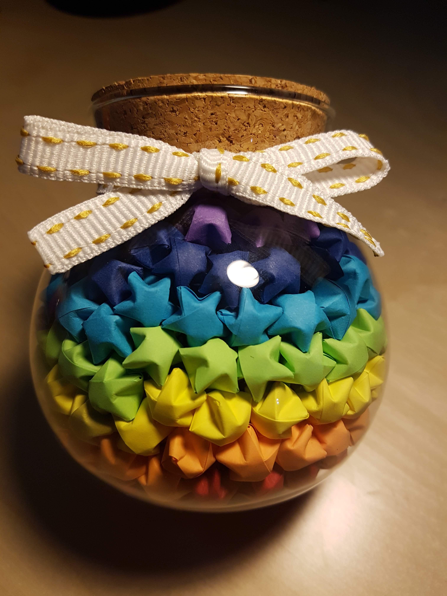

during the last year of primary school, I was moved by the teacher to a new seat on a March morning. It was the first time since I’d grown taller that I no longer sat in the back row, and because of that, I had a new deskmate.
His name was Leo. For the past five years, we had been nothing more than classmates who nodded in passing — we rarely spoke, and knew little about each other.
That summer, we were preparing for the entrance exam to middle school. After I changed seats, the whole class plunged into an intense rhythm of review. We were both good students: I excelled in Chinese, while he was stronger in math. Bit by bit, through helping each other solve problems and explaining questions, the unfamiliarity between us faded, replaced by an easy familiarity. Even now, I still remember that he loved peach yogurt, couldn’t eat spicy food, that both his parents were teachers, and that twice a week he had to attend orchestra rehearsals.
And somewhere along the way, I found myself caring more and more about him.
I can still recall the exact moment I realized I was falling in love for the first time. It was early spring, and flowers had begun to bloom in my hometown. A great peach tree stretched its branches over the glazed-tile walls of a Beijing hutong, scattering pink petals in the wind. Watching that shower of blossoms, I suddenly understood:
"Oh, this is probably love. "
Even till today, I still can feel that weird but amazing feeling of such a revelation. Many years later, I realized that might be the mark between my childhood and adolescence.
A crush in adolescence is always tender and unpolished — I had no idea how to express it.
Looking back now, it feels so naïve, my feelings written all over me, impossible to hide.
But the 12 years old me did not know that: so, I folded a hundred paper stars and placed them in a glass jar.
Handing it to him, I said softly:
"If I score higher than you on the entrance exam, promise me one thing."
He agreed, and from then on I studied harder than ever.
Time passed so fast while studying hard, and soon, June comes, and we took our final test before entering our next stage of life.
Do you think I scored higher than him? YES NO